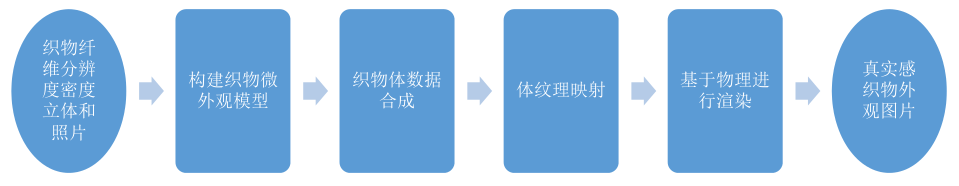
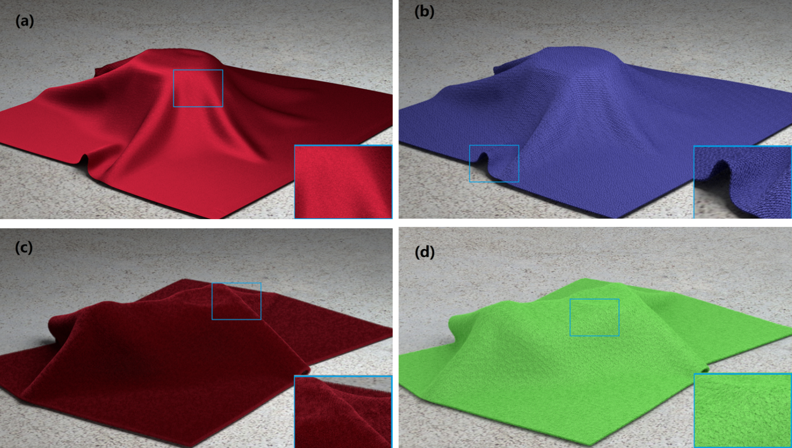
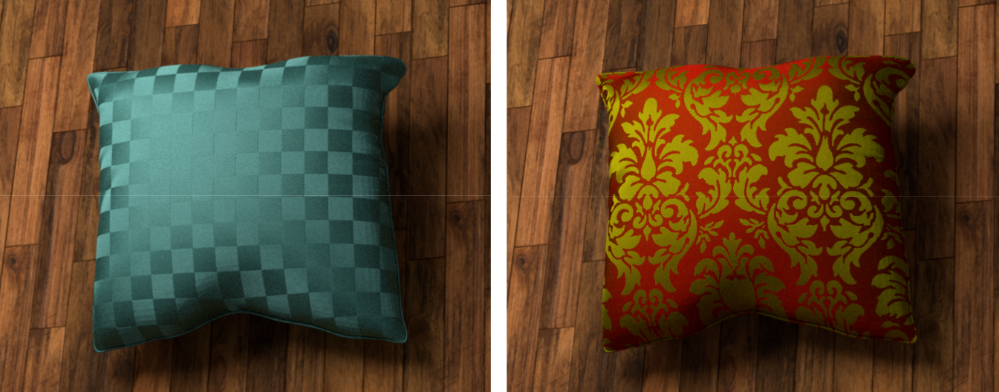
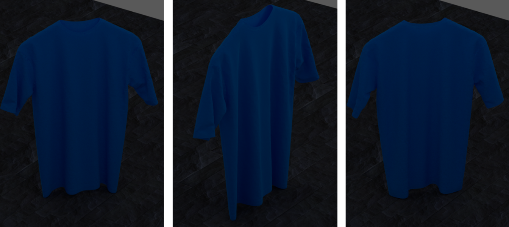
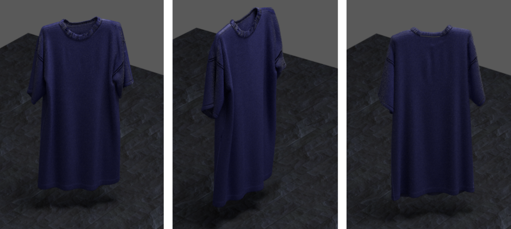
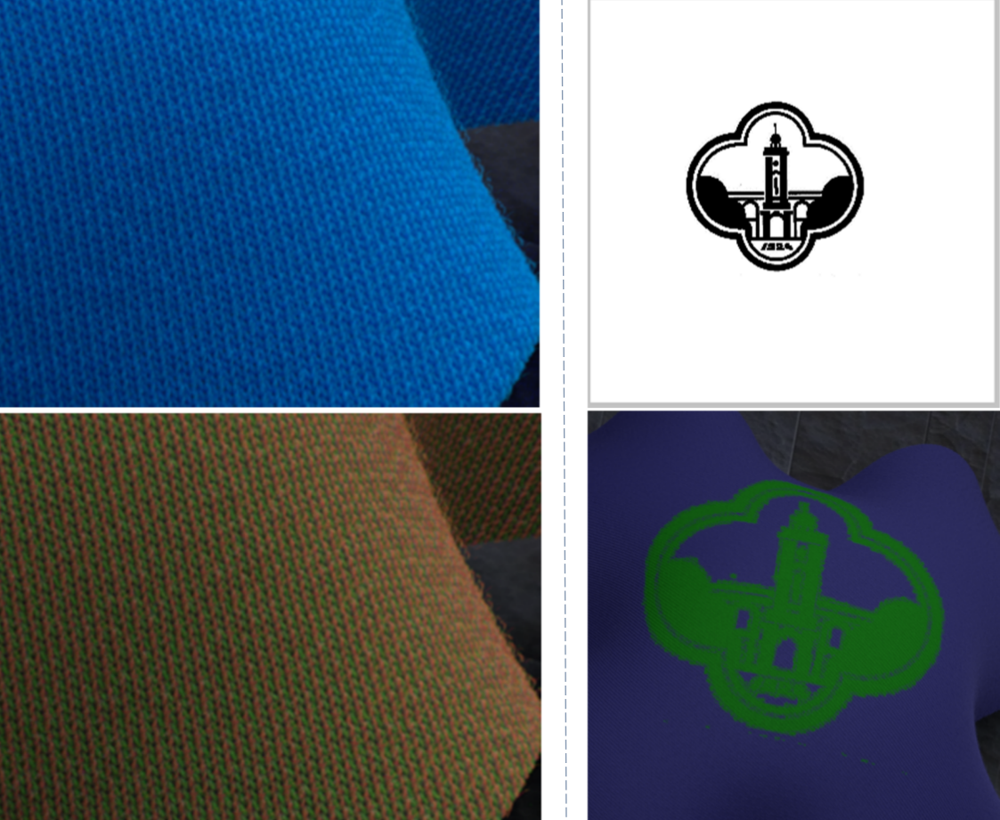

本文设计和实现了一个基于微外观模型的精细三维织物渲染系统。通过结合织物纤维分辨度的密度立体和织物照片,系统首先自动构建出可渲染的织物微外观模型。这些模型数据经过合成与编辑,可创建出非织、针织以及广泛编织型的织物体纹理。织物体纹理可被体映射方法映射到各种网格曲面,构成丰富的织物表现形式(比如服装、枕头)。最后,系统采用基于物理的渲染方法,对织物体纹理进行渲染,生成出高质量的织物图片。

1. [专利108694739A]基于微外观模型的织物真实感外观渲染系统及方法。高成英，李效良，李亚龙。[pdf]
各种布料

枕头

衣服


印染图案等
